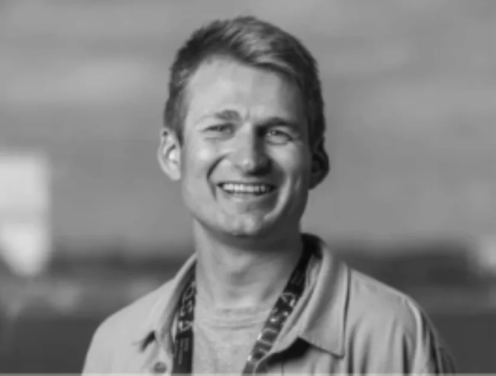

About
Design before data.
A study is only as good as its design. In a trial that means the endpoints, the estimands and the analysis populations are fixed before anyone sees the data; in a register study it means eligibility, time zero, exposure and comparators are fixed on the same terms. No amount of sample size fixes a cohort defined wrong, a time zero that leaks information from the future, or an endpoint chosen after someone has seen the curves.
Ólafur B. Davíðsson
Co-Founder & Lead BiostatisticianStatistical epidemiologist with a PhD from the University of Copenhagen. He trained in statistical genetics at deCODE genetics and held research posts at Statens Serum Institut and the Danish Cancer Institute before co-founding Frameshift. He has led the statistical work on randomised clinical trials, nationwide Danish registry studies and genetic epidemiology, including research published in NEJM Evidence, the British Journal of Cancer and The Lancet Obstetrics, Gynaecology & Women's Health. At Frameshift he leads study design, analysis strategy, statistical programming and reporting.
Ragnar P. Kristjánsson
Co-Founder & Managing DirectorStatistical geneticist with a PhD in immunology and infectious diseases from the University of Copenhagen. He spent nearly a decade at deCODE genetics working on large-scale human genetics, with further experience in cancer epidemiology at the Danish Cancer Institute, spanning gene discovery, population cohorts and registry-based research. At Frameshift he leads the practice and works on study design, genetic and observational analyses, and turning complex biomedical questions into tractable statistical ones.

Mikkel Werling
Computational Methods LeadHe works on machine learning and computational analysis for clinical and health research, built on a background in software engineering and data science. His published work spans machine-learning models for clinical risk prediction and the assembly of research-ready health-data infrastructure from real-world records. At Frameshift he leads computational and machine-learning work, bringing model development and validation to problems where standard statistical methods fall short.
How we work
Epidemiology before analysis
Bias, timing and comparability decide whether a result means anything, in a trial or in a register. We settle the design questions first, and say plainly what the data can and cannot support.
The designer is the analyst
Whoever designs a study writes its analysis and drafts its methods section. Questions about why an estimate moved go to the person who produced it.
Feasibility to manuscript
A study runs from the feasibility read through cohort and endpoint definitions to the analysis and the write-up. Tables, figures and methods text are delivered in the state they need to be in for a submission.
Prespecified, then checked
The analysis plan is signed off before outcome data are examined. Primary results are checked by a second team member.